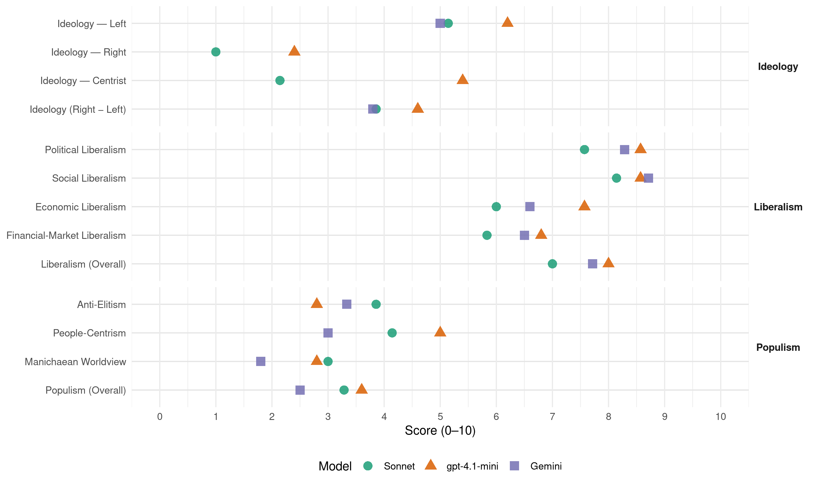

PSOE (Spain, 2004)
manifesto_id 33320_200403
Get full text: This site shows derived annotations and short verbatim quotes only. The full manifesto text is © Manifesto Project / WZB — obtain it via manifesto-project.wzb.eu using the manifesto_id above.
Headline scores
| Dimension | Sonnet | gpt-4.1-mini | Gemini |
|---|---|---|---|
| Populism (Overall) | 3.3 | 3.6 | 2.5 |
| Anti-Elitism | 3.9 | 2.8 | 3.3 |
| People-Centrism | 4.1 | 5.0 | 3.0 |
| Manichaean Worldview | 3.0 | 2.8 | 1.8 |
| Ideology (Right − Left) | 3.9 | 4.6 | 3.8 |
| Liberalism (Overall) | 7.0 | 8.0 | 7.7 |
| Political Liberalism | 7.6 | 8.6 | 8.3 |
| Social Liberalism | 8.1 | 8.6 | 8.7 |
| Economic Liberalism | 6.0 | 7.6 | 6.6 |
| Financial-Market Liberalism | 5.8 | 6.8 | 6.5 |
Evidence per dimension
Economic Liberalism
Gemini · score 7.0 · verified · chunk 1
“mayor libertad económica y más racionalidad”
MÁS INVERSIÓN PRODUCTIVA, MAYOR LIBERTAD ECONÓMICA Y MÁS RACIONALIDAD Y SEGURIDAD EN EL USO DE LOS BIENES PÚBLICOS
Gemini · score 5.0 · verified · chunk 2
“regular el mercado de trabajo y aumentar la productividad”
como forma más dinámica y eficiente de regular el mercado de trabajo y aumentar la productividad de nuestra economía. - Elaboraremos una
Gemini · score 5.0 · mixed · chunk 3
“colaboración con la iniciativa privada en la gestión”
eficacia en el gasto público y a la colaboración con la iniciativa privada en la gestión de los servicios públicos.
Gemini · score 7.0 · verified · chunk 4
“liberalizar la economía para que los consumidores”
El objetivo que nos proponemos es liberalizar la economía para que los consumidores se beneficien de la apertura de los mercados
Gemini · score 7.0 · verified · chunk 5
“fomento y protección de las condiciones propias de los mercados competitivos”
reducción de los precios de los inputs industriales y fomento y protección de las condiciones propias de los mercados competitivos evitando los acuerdos colusorios
Gemini · score 7.0 · verified · chunk 6
“desaparición de los dirigismos fiscales que distorsionan”
Ello se conseguirá a través de la desaparición de los dirigismos fiscales que distorsionan el comportamiento de los agentes
Gemini · score 5.0 · mixed · chunk 7
“inversión y competencia”
política de telecomunicaciones que conjugue derechos sociales e inversión y competencia, para proporcionar
gpt-4.1-mini · score 8.0 · verified · chunk 1
“modernizar las estructuras y el funcionamiento de nuestra economía y aplicar un ambicioso programa de infraestructuras”
Para ello, tuvimos que modernizar las estructuras y el funcionamiento de nuestra economía y aplicar un ambicioso programa de infraestructuras. Lo logramos. Nuestra entrada, además, supuso un cambio en la propia Unión Europea que incorporó desde entonces, como una de sus señas de identidad, políticas de cohesión y solidaridad entre sus miembros.
gpt-4.1-mini · score 7.0 · verified · chunk 2
“el fortalecimiento de los agentes sociales, y la máxima extensión de la negociación colectiva, como forma más dinámica y eficiente de regular el mercado de trabajo”
en los distintos sectores de la actividad económica, el fortalecimiento de los agentes sociales, y la máxima extensión de la negociación colectiva, como forma más dinámica y eficiente de regular el mercado de trabajo y aumentar la productividad de nuestra economía.
gpt-4.1-mini · score 8.0 · verified · chunk 3
“una política fiscal y una estructura de gasto público que permitieran el avance de la protección social y de los servicios públicos básicos”
Fue el PSOE el partido que construyó las bases de un Estado del bienestar al establecer una política fiscal y una estructura de gasto público que permitieran el avance de la protección social y de los servicios públicos básicos: pensiones, educación, sanidad, servicios sociales… No hacen falta datos para probar esta evidencia.
gpt-4.1-mini · score 8.0 · verified · chunk 4
“liberalizar la economía para que los consumidores se beneficien de la apertura de los mercados y de los cambios tecnológicos”
Libertad económica potenciando la movilidad empresarial y el espíritu emprendedor. El objetivo que nos proponemos es liberalizar la economía para que los consumidores se beneficien de la apertura de los mercados y de los cambios tecnológicos. Para conseguirlo, es necesario que la competencia entre empresas encuentre los menores obstáculos posibles y, a su vez, en aquellos sectores en que, por sus características, subsistan situaciones de monopolio o de posiciones de dominio de mercado, es necesario que la regulación se oriente a facilitar el avance de la competencia y a impedir el abuso de posición dominante por parte de las empresas con poder de mercado.
gpt-4.1-mini · score 7.0 · verified · chunk 5
“liberalización de los mercados de bienes y servicios”
…La liberalización de los mercados de bienes y servicios para favorecer la reducción de los precios de los inputs industriales y fomento y protección de las condiciones propias de los mercados competitivos evitando los acuerdos colusorios y el ejercicio de poderes de mercado. La acción coordinada y complementaria de las iniciativas de ámbito estatal, autonómico y comunitario de forma que se eviten duplicidades y se multiplique el efecto de las políticas públicas…
gpt-4.1-mini · score 7.0 · verified · chunk 6
“el sistema fiscal alcance mayores niveles de eficiencia”
…c) Eficiente. La propuesta del PSOE permitirá que el sistema fiscal alcance mayores niveles de eficiencia, porque tanto los trabajadores como las empresas asignarán sus recursos en actividades que ellos consideren más convenientes, en lugar de aquellas que desee la Hacienda. Ello se conseguirá a través de la desaparición de los dirigismos fiscales que distorsionan el comportamiento de los agentes económicos. Y permitirá un mayor crecimiento de la inversión, el empleo y la productividad…
gpt-4.1-mini · score 8.0 · verified · chunk 7
“fomenten la cultura de la innovación en las empresas”
Impulsaremos políticas que fomenten la cultura de la innovación en las empresas, con el objetivo de equilibrar nuestra balanza tecnológica y reducir la enorme diferencia existente con los países de nuestro entorno. El conjunto de medidas de promoción de la innovación, así como las de carácter financiero o fiscal, conformarán un Programa de Innovación con las Comunidades Autónomas, basado en la colaboración de todas las Administraciones y avalado con un acuerdo social con Sindicatos y Empresarios.
Sonnet · score 6.0 · verified · chunk 1
“mayor libertad económica”
DINAMIZAR LA ECONOMÍA: MÁS INVERSIÓN PRODUCTIVA, MAYOR LIBERTAD ECONÓMICA Y MÁS RACIONALIDAD Y SEGURIDAD EN EL USO DE LOS BIENES PÚBLICOS
Sonnet · score 5.0 · verified · chunk 2
“regular el mercado de trabajo y aumentar la productividad”
la máxima extensión de la negociación colectiva, como forma más dinámica y eficiente de regular el mercado de trabajo y aumentar la productividad de nuestra economía.
Sonnet · score 5.0 · mixed · chunk 3
“el mercado es insensible y ajeno”
porque sabemos que el mercado es insensible y ajeno a sus soluciones y porque reivindicamos esa función noble y principal de la política
Sonnet · score 7.0 · verified · chunk 4
“liberalizar la economía para que los consumidores”
El objetivo que nos proponemos es liberalizar la economía para que los consumidores se beneficien de la apertura de los mercados
Sonnet · score 6.0 · mixed · chunk 5
“liberalización de los mercados de bienes y servicios”
La liberalización de los mercados de bienes y servicios para favorecer la reducción de los precios de los inputs industriales
Sonnet · score 6.0 · verified · chunk 6
“los trabajadores como las empresas asignarán sus recursos”
tanto los trabajadores como las empresas asignarán sus recursos en actividades que ellos consideren más convenientes, en lugar de aquellas que desee la Hacienda
Sonnet · score 5.0 · mixed · chunk 7
“impulsar un nuevo modelo de política de telecomunicaciones que conjugue derechos sociales e inversión y competencia”
impulsar un nuevo modelo de política de telecomunicaciones que conjugue derechos sociales e inversión y competencia, para proporcionar más oportunidades y bienestar.
Financial-Market Liberalism
Gemini · score 7.0 · verified · chunk 2
“auditorías del FMI sobre transparencia de entes públicos y sistema financiero”
Someteremos a España a las dos auditorías del FMI sobre transparencia de entes públicos y sistema financiero.
Gemini · score 5.0 · verified · chunk 3
“aprovecharán las mejores condiciones del mercado”
operaciones conjuntas que aprovecharán las mejores condiciones del mercado. Se promoverán acuerdos entre la Hacienda
Gemini · score 7.0 · verified · chunk 4
“concurrencia a concursos públicos u obtención de créditos”
Estas empresas gozarán de preferencia en la concurrencia a concursos públicos u obtención de créditos o ayudas públicas.
Gemini · score 7.0 · verified · chunk 5
“desarrollo de los mercados financieros”
sistemas de gobierno de las empresas, influye en el desarrollo de los mercados financieros y de bienes y servicios
gpt-4.1-mini · score 7.0 · verified · chunk 1
“la reforma de las instituciones económicas y financieras internacionales”
El mundo será más seguro si conseguimos el reforzamiento de los instrumentos multilaterales de promoción y de defensa de los derechos humanos; el decidido respaldo a la Corte Penal Internacional; la reforma de las instituciones económicas y financieras internacionales; la constitución de un órgano efectivo y representativo para coordinar e impulsar la labor de las instituciones económicas y financieras internacionales; la incorporación a la Carta de las Naciones Unidas del objetivo del desarrollo sostenible y de la preservación del medio ambiente global; y el establecimiento de mecanismos que aseguren la presencia y la participación de la sociedad civil organizada cerca de la ONU.
gpt-4.1-mini · score 6.0 · verified · chunk 2
“Garantizaremos la neutralidad política y la imparcialidad de los organismos de regulación y control, como la CNMT y la CNMV”
Garantizaremos la neutralidad política y la imparcialidad de los organismos de regulación y control, como la CNMT y la CNMV, renunciando al monopolio gubernamental en el nombramiento de sus miembros directivos y reforzando los mecanismos de control parlamentario directo.
gpt-4.1-mini · score 7.0 · verified · chunk 4
“Potenciar el órgano regulador independiente (CNE), procediendo a su elección directa por el Parlamento”
Sector Energétic._ Queremos construir un nuevo modelo energético más diversificado y seguro, menos contaminante y más solidario socialmente por su carácter de servicio público, y progresivamente más apoyado en fuentes energéticas renovables como garantía de futuro; menos cantidad y más calidad. Para ello proponemos, - Potenciar el órgano regulador independiente (CNE), procediendo a su elección directa por el Parlamento. - Limitar el poder horizontal y vertical de los mercados energéticos.
gpt-4.1-mini · score 7.0 · verified · chunk 5
“dotar con más medios para la inspección y control tanto a la CNMV”
…Dotar con más medios para la inspección y control tanto a la CNMV como al Banco de España, implantando en ambos un verdadero Servicio de Reclamaciones que facilite la resolución de los conflictos, previamente a la vía legal. - El Presidente y los Consejeros de la Comisión Nacional del Mercado de Valores serán nombrados por el Pleno del Congreso, a propuesta de la Comisión de Economía, siendo necesaria una mayoría cualificada de tres quintos de sus miembros…
gpt-4.1-mini · score 7.0 · verified · chunk 7
“incrementaremos los fondos públicos de investigación y desarrollo”
Para garantizar el cumplimiento de los objetivos señalados, incrementaremos los fondos públicos de investigación y desarrollo, referidos a los gastos no financieros (capítulos 1-7), en un 25% anual. Sólo se contabilizarán como gastos de I+D los que realmente sean utilizados para estos fines, reubicando los correspondientes a Gastos Militares destinados a la fabricación de unidades de armamento en el lugar adecuado, e impulsando y aumentando los fondos para investigación con fines sociales, económicos y culturales.
Sonnet · score 5.0 · verified · chunk 1
“reforma de las instituciones económicas y financieras internacionales”
el decidido respaldo a la Corte Penal Internacional; la reforma de las instituciones económicas y financieras internacionales; la constitución de un órgano efectivo
Sonnet · score 6.0 · verified · chunk 2
“auditorías del FMI sobre transparencia de entes públicos y sistema financiero”
Someteremos a España a las dos auditorías del FMI sobre transparencia de entes públicos y sistema financiero.
Sonnet · score 5.0 · verified · chunk 3
“mejores condiciones del mercado”
operaciones conjuntas que aprovecharán las mejores condiciones del mercado. Se promoverán acuerdos entre la Hacienda Estatal y las Comunidades Autónomas para subvencionar los tipos de interés
Sonnet · score 6.0 · verified · chunk 4
“Aumentaremos los fondos de capital-riesgo”
Potenciar la canalización de una parte de la inversión colectiva hacia el capital semilla. Definir un modelo de competencia estable. Aumentaremos los fondos de capital-riesgo.
Sonnet · score 7.0 · verified · chunk 5
“reforzar los derechos de los accionistas minoritarios”
dotar de transparencia al sistema, reforzar los derechos de los accionistas minoritarios, garantizar el buen gobierno de las empresas
Sonnet · score 6.0 · verified · chunk 6
“fomentar el ahorro y la inversión”
Eliminar la tributación para los patrimonios medios y bajos. Fomentar el ahorro y la inversión. Ejes de la reforma: Elevación del mínimo exento actual
Political Liberalism
Gemini · score 9.0 · verified · chunk 1
“recuperar el papel central de las Cortes Generales”
Es imprescindible recuperar el papel central de las Cortes Generales, especialmente del Congreso de los Diputados, e impulsar su protagonismo
Gemini · score 9.0 · verified · chunk 2
“El sistema democrático no se basa sólo en normas”
PROPUESTA PARA UN MODELO DE GOBIERNO. El sistema democrático no se basa sólo en normas y procedimientos reglados, sino que requiere
Gemini · score 8.0 · verified · chunk 3
“garantizado los derechos y libertades de los ciudadanos”
Con ella, se han garantizado los derechos y libertades de los ciudadanos, se han regulado las instituciones públicas
Gemini · score 8.0 · verified · chunk 4
“instrumentos del sistema democrático”
violación de los derechos humanos que hay que combatir con toda la fuerza y todos los instrumentos del sistema democrático.
Gemini · score 8.0 · verified · chunk 5
“profundizando así la democracia”
evaluar la actuación pública en esta materia, profundizando así la democracia. Los objetivos de las propuestas
Gemini · score 8.0 · verified · chunk 6
“participación ciudadana en un sistema democrático”
Esta responsabilidad es una de las máximas formas de participación ciudadana en un sistema democrático, cuyo mantenimiento depende
Gemini · score 8.0 · verified · chunk 7
“derecho a la libertad de expresión”
hagan compatibles el derecho a la libertad de expresión con la defensa de los interese de los más débiles
gpt-4.1-mini · score 9.0 · verified · chunk 1
“la consolidación de la democracia y las libertades ciudadanas”
De todos ellos, el más importante fue la consolidación de la democracia y las libertades ciudadanas, después de un intento de golpe de Estado. También fuimos los socialistas quienes tuvimos la responsabilidad de desarrollar el Estado Autonómico que establecía la Constitución y quienes asumimos la tarea de impulsar la vida municipal, desarrollando la democracia local y convirtiendo los Ayuntamientos en administraciones cercanas y participativas.
gpt-4.1-mini · score 9.0 · verified · chunk 2
“El sistema democrático no se basa sólo en normas y procedimientos reglados, sino que requiere hábitos y modos de actuar por parte del Gobierno”
II. UN GOBIERNO RESPONSABLE ANTE LA SOCIEDAD Y ANTE EL PARLAMENTO PROPUESTA PARA UN MODELO DE GOBIERNO. El sistema democrático no se basa sólo en normas y procedimientos reglados, sino que requiere hábitos y modos de actuar por parte del Gobierno. El pluralismo y la diversidad; el diálogo y la tolerancia; el respeto institucional y la cohesión territorial han sido fuertemente dañados por el Gobierno del PP.
gpt-4.1-mini · score 9.0 · verified · chunk 3
“la Constitución se ha revelado como la mejor aventura colectiva de los españoles para construir, en ejercicio de la soberanía popular, su convivencia en paz, libertad y progreso”
VII. REFORMAS CONSTITUCIONALES. Transcurridos veinticinco años desde su promulgación, la Constitución se ha revelado como la mejor aventura colectiva de los españoles para construir, en ejercicio de la soberanía popular, su convivencia en paz, libertad y progreso. Con ella, se han garantizado los derechos y libertades de los ciudadanos, se han regulado las instituciones públicas y las relaciones entre ellas y se ha modificado profundamente la estructura del Estado para descentralizar el poder y reconocer el derecho de las nacionalidades y regiones a su autonomía y a participar en el proyecto común de España.
gpt-4.1-mini · score 9.0 · verified · chunk 4
“violación de los derechos humanos que hay que combatir con toda la fuerza y todos los instrumentos del sistema democrático”
violación de los derechos humanos que hay que combatir con toda la fuerza y todos los instrumentos del sistema democrático. Por eso, frente a una política de retoques parciales, la propuesta de una Ley Integral contra la violencia responde al déficit de ciudadanía que representa la agresión contra las mujeres.
gpt-4.1-mini · score 8.0 · verified · chunk 5
“Creación de una Oficina Presupuestaria en el seno de las Cortes Generales”
…Creación de una Oficina Presupuestaria en el seno de las Cortes Generales, dirigida a asesorar de forma independiente y selectiva a los parlamentarios en las etapas de discusión y aprobación, ejecución, liquidación y control del presupuesto. Reforma del Tribunal de Cuentas, encaminada a reducir los retrasos e introducir sistemas de evaluación de la eficiencia y la eficacia de la actividad económico-financiera del sector público…
gpt-4.1-mini · score 8.0 · verified · chunk 6
“No hay democracia sin impuestos”
…a) Próximo. No hay democracia sin impuestos. Por ello, el ciudadano debe sentir los impuestos como algo suyo. Debe ser consciente de que está contribuyendo a mantener un conjunto de gastos que revierten sobre sí mismo, sobre los suyos, sobre su entorno y sobre el país. Esta responsabilidad es una de las máximas formas de participación ciudadana en un sistema democrático…
gpt-4.1-mini · score 8.0 · verified · chunk 7
“informes para el Parlamento sobre los temas que preocupen”
Creación de un Consejo Español de Ética de Ciencia y Tecnología y de una Oficina de Evaluación de Tecnologías, que realicen estudios y elaboren informes para el Parlamento sobre los temas que preocupen a la sociedad (transgénicos, cambio climático, biodiversidad, nuevas enfermedades, gestión de catástrofes y de riesgos…).
Sonnet · score 9.0 · verified · chunk 1
“recuperar el papel central de las Cortes Generales”
Es imprescindible recuperar el papel central de las Cortes Generales, especialmente del Congreso de los Diputados, e impulsar su protagonismo en la vida política
Sonnet · score 8.0 · verified · chunk 2
“sistema democrático desarrolla sus mejores cualidades”
Con un Parlamento que tenga a su disposición información abundante, adecuada y a su tiempo, el sistema democrático desarrolla sus mejores cualidades, permite identificar las discrepancias
Sonnet · score 8.0 · verified · chunk 3
“democracia y los derechos humanos para las personas”
construimos la democracia y los derechos humanos para las personas, con independencia de su condición, por el mero hecho de serlo
Sonnet · score 7.0 · verified · chunk 4
“déficit democrático que es imprescindible corregir”
además de constituir una grave discriminación supone un déficit democrático que es imprescindible corregir. El compromiso del Partido Socialista con la defensa de la igualdad
Sonnet · score 7.0 · verified · chunk 5
“profundizando así la democracia”
con capacidad efectiva para evaluar la actuación pública en esta materia, profundizando así la democracia
Sonnet · score 7.0 · verified · chunk 6
“No hay democracia sin impuestos”
No hay democracia sin impuestos. Por ello, el ciudadano debe sentir los impuestos como algo suyo. Debe ser consciente de que está contribuyendo a mantener un conjunto de gastos
Sonnet · score 7.0 · verified · chunk 7
“el espíritu crítico que ha de caracterizar la democracia”
aplicada a la Cultura, implica barreras evidentes al negar tanto la independencia creadora como el espíritu crítico que ha de caracterizar la democracia.
Liberalism (Overall)
Gemini · score 8.0 · verified · chunk 1
“recuperar el papel central de las Cortes Generales”
Es imprescindible recuperar el papel central de las Cortes Generales, especialmente del Congreso de los Diputados, e impulsar su protagonismo
Gemini · score 8.0 · verified · chunk 2
“El sistema democrático no se basa sólo en normas”
PROPUESTA PARA UN MODELO DE GOBIERNO. El sistema democrático no se basa sólo en normas y procedimientos reglados, sino que requiere
Gemini · score 7.0 · verified · chunk 3
“garantizado los derechos y libertades de los ciudadanos”
Con ella, se han garantizado los derechos y libertades de los ciudadanos, se han regulado las instituciones públicas
Gemini · score 8.0 · verified · chunk 4
“liberalizar la economía para que los consumidores”
El objetivo que nos proponemos es liberalizar la economía para que los consumidores se beneficien de la apertura de los mercados
Gemini · score 8.0 · verified · chunk 5
“fomento y protección de las condiciones propias de los mercados competitivos”
reducción de los precios de los inputs industriales y fomento y protección de las condiciones propias de los mercados competitivos evitando los acuerdos colusorios
Gemini · score 8.0 · verified · chunk 6
“desaparición de los dirigismos fiscales que distorsionan”
Ello se conseguirá a través de la desaparición de los dirigismos fiscales que distorsionan el comportamiento de los agentes
Gemini · score 7.0 · verified · chunk 7
“derecho a la libertad de expresión”
hagan compatibles el derecho a la libertad de expression con la defensa de los interese de los más débiles
gpt-4.1-mini · score 8.0 · verified · chunk 1
“la consolidación de la democracia y las libertades ciudadanas”
De todos ellos, el más importante fue la consolidación de la democracia y las libertades ciudadanas, después de un intento de golpe de Estado. También fuimos los socialistas quienes tuvimos la responsabilidad de desarrollar el Estado Autonómico que establecía la Constitución y quienes asumimos la tarea de impulsar la vida municipal, desarrollando la democracia local y convirtiendo los Ayuntamientos en administraciones cercanas y participativas.
gpt-4.1-mini · score 8.0 · verified · chunk 2
“El sistema democrático no se basa sólo en normas y procedimientos reglados, sino que requiere hábitos y modos de actuar por parte del Gobierno”
II. UN GOBIERNO RESPONSABLE ANTE LA SOCIEDAD Y ANTE EL PARLAMENTO PROPUESTA PARA UN MODELO DE GOBIERNO. El sistema democrático no se basa sólo en normas y procedimientos reglados, sino que requiere hábitos y modos de actuar por parte del Gobierno. El pluralismo y la diversidad; el diálogo y la tolerancia; el respeto institucional y la cohesión territorial han sido fuertemente dañados por el Gobierno del PP.
gpt-4.1-mini · score 9.0 · verified · chunk 3
“la Constitución se ha revelado como la mejor aventura colectiva de los españoles para construir, en ejercicio de la soberanía popular, su convivencia en paz, libertad y progreso”
VII. REFORMAS CONSTITUCIONALES. Transcurridos veinticinco años desde su promulgación, la Constitución se ha revelado como la mejor aventura colectiva de los españoles para construir, en ejercicio de la soberanía popular, su convivencia en paz, libertad y progreso. Con ella, se han garantizado los derechos y libertades de los ciudadanos, se han regulado las instituciones públicas y las relaciones entre ellas y se ha modificado profundamente la estructura del Estado para descentralizar el poder y reconocer el derecho de las nacionalidades y regiones a su autonomía y a participar en el proyecto común de España.
gpt-4.1-mini · score 8.0 · verified · chunk 4
“garantizar el derecho de mujeres y hombres a su propia opción respecto a su salud y a sus derechos sexuales”
El derecho a la salud reproductiva debe ser uno de los principios que deben orientar y guiar las políticas que se desarrollen para garantizar el derecho de mujeres y hombres a su propia opción respecto a su salud y a sus derechos sexuales, así como a una maternidad/paternidad responsable.
gpt-4.1-mini · score 7.0 · verified · chunk 5
“Creación de una Oficina Presupuestaria en el seno de las Cortes Generales”
…Creación de una Oficina Presupuestaria en el seno de las Cortes Generales, dirigida a asesorar de forma independiente y selectiva a los parlamentarios en las etapas de discusión y aprobación, ejecución, liquidación y control del presupuesto. Reforma del Tribunal de Cuentas, encaminada a reducir los retrasos e introducir sistemas de evaluación de la eficiencia y la eficacia de la actividad económico-financiera del sector público…
gpt-4.1-mini · score 8.0 · verified · chunk 6
“garantizar una educación de calidad para todos”
…Los socialistas otorgaremos a la educación la prioridad política y presupuestaria básica en nuestra acción de gobierno. Impulsaremos una política educativa que persiga una sociedad más moderna, más justa, más culta, más rica y más cohesionada ; que nos incorpore de forma activa y creativa a la sociedad del conocimiento; que ponga las bases para una educación más cosmopolita, que prime la formación en los valores universales de los derechos humanos…
gpt-4.1-mini · score 8.0 · verified · chunk 7
“incrementaremos los fondos públicos de investigación y desarrollo”
Para garantizar el cumplimiento de los objetivos señalados, incrementaremos los fondos públicos de investigación y desarrollo, referidos a los gastos no financieros (capítulos 1-7), en un 25% anual. Sólo se contabilizarán como gastos de I+D los que realmente sean utilizados para estos fines, reubicando los correspondientes a Gastos Militares destinados a la fabricación de unidades de armamento en el lugar adecuado, e impulsando y aumentando los fondos para investigación con fines sociales, económicos y culturales.
Sonnet · score 7.0 · verified · chunk 1
“información libre y plural y transparencia de la vida pública”
III. INFORMACIÓN LIBRE Y PLURAL, Y TRANSPARENCIA DE LA VIDA PÚBLICA. Los socialistas queremos que el sistema de poder burocrático, centralizado y opaco, desarrollado por la derecha, se convierta en otro muy diferente
Sonnet · score 7.0 · verified · chunk 2
“sistema democrático desarrolla sus mejores cualidades”
Con un Parlamento que tenga a su disposición información abundante, adecuada y a su tiempo, el sistema democrático desarrolla sus mejores cualidades
Sonnet · score 7.0 · verified · chunk 3
“democracia y los derechos humanos para las personas”
construimos la democracia y los derechos humanos para las personas, con independencia de su condición, por el mero hecho de serlo
Sonnet · score 7.0 · verified · chunk 4
“respeto a la libertad económica”
Desde el Partido Socialista nos comprometemos a respetar la libertad económica: en el respeto a los proyectos empresariales
Sonnet · score 7.0 · verified · chunk 5
“transparencia al sistema, reforzar los derechos”
dotar de transparencia al sistema, reforzar los derechos de los accionistas minoritarios, garantizar el buen gobierno de las empresas
Sonnet · score 7.0 · verified · chunk 6
“mayor eficiencia, simplicidad y equidad del impuesto”
la propuesta de reforma se centra en una mayor eficiencia, simplicidad y equidad del impuesto. Todo ello garantizando la necesaria suficiencia financiera
Sonnet · score 7.0 · verified · chunk 7
“la Cultura es un derecho y un deber del ciudadano”
Un gobierno progresista deberá atenuar esta caída del mundo cultural con una Ley de Excepcionalidad Cultural: la Cultura no es una mercancía más; la Cultura es un derecho y un deber del ciudadano.
Anti-Elitism
Gemini · score 3.0 · verified · chunk 1
“el sistema de poder burocrático, centralizado y opaco, desarrollado por la derecha”
Los socialistas queremos que el sistema de poder burocrático, centralizado y opaco, desarrollado por la derecha, se convierta en otro muy diferente
Gemini · score 3.0 · verified · chunk 2
“sistema de poder burocrático, centralizado y opaco”
Los socialistas queremos que el sistema de poder burocrático, centralizado y opaco, desarrollado por la derecha, se convierta
Gemini · score 3.0 · verified · chunk 3
“la mentira y al sectarismo con que la derecha”
No es necesario tampoco contestar a la mentira y al sectarismo con que la derecha española interpreta la gestión socialista.
Gemini · score 4.0 · verified · chunk 4
“politizado los mercados hasta un punto inédito”
El PP ha politizado los mercados hasta un punto inédito en la historia de la democracia española.
Gemini · score 3.0 · verified · chunk 6
“el Gobierno del Partido Popular ha suplantado”
porque el Gobierno del Partido Popular ha suplantado el sentido de convivencia que la Cultura afirma
Gemini · score 4.0 · verified · chunk 7
“clamoroso fracaso del gobierno del PP”
Venimos asistiendo a un clamoroso fracaso del gobierno del PP, que ha tenido diversas consecuencias
gpt-4.1-mini · score 3.0 · verified · chunk 1
“el Gobierno del PP ha puesto la política al servicio de intereses personales, partidarios o grupales”
La democracia implica aceptación del pluralismo y de la diversidad; tolerancia y diálogo; autonomía de la política y respeto y responsabilidad institucional. Sin embargo, los españoles hemos padecido un Gobierno que ha puesto la política al servicio de intereses personales, partidarios o grupales; que ha colonizado las mayores empresas y la mayoría de los medios de comunicación y que se ha dejado colonizar, a su vez, por ellos; que ha ocupado las instituciones estratégicas de la sociedad civil en una interpenetración entre intereses políticos y económicos; que ha roto consensos largamente establecidos; que ha maltratado el funcionamiento del Parlamento y de la Justicia; que se ha empeñado en obtener rentabilidad política electoral, de su deber de evitar la desintegración territorial, y que dictamina unilateralmente cuál debe ser el fundamento y hasta el último matiz de la identidad nacional de España.
gpt-4.1-mini · score 3.0 · verified · chunk 2
“un Gobierno que: - Sea autónomo frente a los poderes y los intereses que no están legitimados por la voluntad popular”
Un Gobierno que: - Sea autónomo frente a los poderes y los intereses que no están legitimados por la voluntad popular. Que no sea acreedor ni deudor más que de los ciudadanos. - Sea flexible, innovador y eficaz en su gestión de los intereses, aspiraciones y necesidades colectivas, y garantice la provisión de los bienes públicos esenciales.
gpt-4.1-mini · score 3.0 · verified · chunk 5
“el clientelismo político está instalado en el Ministerio”
…la gestión de las ayudas es poco transparente, existen irregularidades, no se propicia la participación de las Comunidades Autónomas y el clientelismo político está instalado en el Ministerio bajo el señuelo de las actuaciones de reindustrialización. Las ideas fuerza de la propuesta socialista van dirigidas a propiciar un crecimiento económico estable…
gpt-4.1-mini · score 3.0 · verified · chunk 6
“la inestabilidad derivada de los continuos cambios normativos”
…la complejidad del sistema, además de incentivar el fraude y la elusión fiscal mencionadas, genera elevados costes de gestión al contribuyente y a la Administración Tributaria. Así, se estima que el coste de cumplimiento medio por contribuyente de IRPF equivale a 240 euros, el 9% de la recaudación de este impuesto. Y, en el caso del Impuesto de Sociedades, el coste promedio se sitúa en los 3.000 euros anuales para una pequeña empresa. A la complejidad de los impuestos se une la inestabilidad derivada de los continuos cambios normativos, que en modo alguno facilitan la toma de decisiones de los agentes económicos. En este sentido, en la última legislatura se han producido más de 2.000 cambios legislativos en materia impositiva, a una media de 3 modificaciones normativas por día. INEFICIENTE…
gpt-4.1-mini · score 2.0 · verified · chunk 7
“clamoroso fracaso del gobierno del PP”
Desgraciadamente hay un gran retraso de nuestro país en el desarrollo de la Sociedad de la Información y del Conocimiento. Venimos asistiendo a un clamoroso fracaso del gobierno del PP, que ha tenido diversas consecuencias: el mantenimiento de una gran brecha digital entre España y los países de nuestro entorno, entre nuestros territorios y entre nuestros ciudadanos; una insuficiente productividad en las empresas por la escasa incorporación de las nuevas tecnologías a sus procesos productivos;
Sonnet · score 6.0 · verified · chunk 1
“la mayoría absoluta del Partido Popular ha supuesto un claro retroceso”
En los últimos cuatro años, la mayoría absoluta del Partido Popular ha supuesto un claro retroceso en la calidad de nuestro sistema democrático
Sonnet · score 4.0 · verified · chunk 2
“poderes y los intereses que no están legitimados”
Sea autónomo frente a los poderes y los intereses que no están legitimados por la voluntad popular. Que no sea acreedor ni deudor más que de los ciudadanos.
Sonnet · score 3.0 · verified · chunk 3
“política autoritaria y antisocial del PP”
La política autoritaria y antisocial del PP ha elevado la conciencia política y las movilizaciones sociales de los jóvenes españoles.
Sonnet · score 3.0 · verified · chunk 4
“El PP ha politizado los mercados”
LIBERTAD ECONÓMICA. El PP ha politizado los mercados hasta un punto inédito en la historia de la democracia española.
Sonnet · score 4.0 · verified · chunk 5
“favorecer los intereses de los grandes grupos económicos”
con el claro propósito de eliminar controles y legitimar instrumentos destinados a favorecer los intereses de los grandes grupos económicos y renunciando a las reformas precisas
Sonnet · score 3.0 · verified · chunk 6
“política educativa regresiva, injusta y autoritaria”
El Partido Popular ha llevado a cabo una política educativa regresiva, injusta y autoritaria, que nos aleja de nuestro entorno europeo
Sonnet · score 4.0 · verified · chunk 7
“gobierno del Partido Popular han demostrado, pública y repetidamente, un desprecio por la Cultura”
En nuestro país, los años de gobierno del Partido Popular han demostrado, pública y repetidamente, un desprecio por la Cultura.
Ideology — Centrist
gpt-4.1-mini · score 6.0 · verified · chunk 1
“todos hemos sido protagonistas: nadie puede reclamar en exclusiva el éxito de este proceso”
Hoy, España es una sociedad libre, abierta al cambio, capaz de afrontar los retos del desarrollo y de la modernización. Y este ha sido el resultado de un afán colectivamente mantenido. En esa tarea, todos hemos sido protagonistas: nadie puede reclamar en exclusiva el éxito de este proceso y a nadie se puede excluir de su mérito.
gpt-4.1-mini · score 6.0 · verified · chunk 2
“Un Gobierno que conecte con los ciudadanos y que mire hacia el futuro con otros compromisos”
Un modelo de Gobierno que conecte con los ciudadanos y que mire hacia el futuro con otros compromisos. Un Gobierno que: - Sea autónomo frente a los poderes y los intereses que no están legitimados por la voluntad popular.
gpt-4.1-mini · score 5.0 · verified · chunk 5
“la participación ciudadana en un sistema democrático”
…el ciudadano debe sentir los impuestos como algo suyo. Debe ser consciente de que está contribuyendo a mantener un conjunto de gastos que revierten sobre sí mismo, sobre los suyos, sobre su entorno y sobre el país. Esta responsabilidad es una de las máximas formas de participación ciudadana en un sistema democrático, cuyo mantenimiento depende de este esfuerzo colectivo…
gpt-4.1-mini · score 5.0 · verified · chunk 6
“la simplificación liberará recursos para la investigación y lucha contra el fraude”
…e) Eficaz en la recaudación. La recaudación, cuyo nivel actual queda garantizado tanto en la reforma del IRPF como el del Impuesto de Sociedades, aumentará por varios motivos: En primer lugar, porque la simplificación liberará recursos para la investigación y lucha contra el fraude, Se reducen las posibilidades de elusión, incentivando el cumplimiento voluntario de individuos y empresas…
gpt-4.1-mini · score 5.0 · verified · chunk 7
“una cultura con los ciudadanos”
El horizonte de la política cultural socialista se define, por lo tanto, con claridad: una cultura con los ciudadanos. El contexto actual exige una nueva política cultural que afronte tres grandes retos: Considerar la Cultura como condición básica de la ciudadanía; como dimensión que amplía el ejercicio de las libertades y que favorece la igualdad; como servicio público.
Sonnet · score 2.0 · verified · chunk 1
“Una forma de hacer política abierta a la participación, al diálogo”
Una forma de hacer política abierta a la participación, al diálogo, al consenso. Hemos hecho este programa electoral con ese espíritu.
Sonnet · score 3.0 · verified · chunk 2
“Incorpore a los grupos y ciudadanos al proceso”
Incorpore a los grupos y ciudadanos al proceso de toma de decisiones y sea receptivo a sus demandas.
Sonnet · score 2.0 · verified · chunk 3
“fruto del consenso y reciba el apoyo”
esa reforma sea, como el texto original, fruto del consenso y reciba el apoyo abrumador de la mayoría.
Sonnet · score 1.0 · verified · chunk 4
“Pacto de Estado sobre Inmigración”
Formular un Pacto de Estado sobre Inmigración, convocando a las fuerzas políticas, sindicatos, empresarios y organizaciones sociales
Sonnet · score 2.0 · verified · chunk 5
“el ciudadano debe sentir los impuestos como algo suyo”
No hay democracia sin impuestos. Por ello, el ciudadano debe sentir los impuestos como algo suyo
Sonnet · score 2.0 · verified · chunk 6
“consenso básico sobre los cambios necesarios”
propiciaremos un diálogo con todos, en primer lugar con las Comunidades Autónomas, con Ayuntamientos, Comunidad Educativa, CRUE, agentes sociales, organizaciones educativas y escolares, científicas y de comunicación para lograr un consenso básico sobre los cambios necesarios
Sonnet · score 3.0 · verified · chunk 7
“Asegurar el acceso de los ciudadanos, independientemente de su procedencia social o territorial”
Asegurar el acceso de los ciudadanos, independientemente de su procedencia social o territorial, a las nuevas tecnologías garantizando infraestructuras de calidad y a precios razonables
Ideology — Left
Gemini · score 4.0 · verified · chunk 1
“una globalización regida por la dureza neoliberal”
EL MALESTAR DE LA CULTURA: UNA GLOBALIZACIÓN REGIDA POR LA DUREZA NEOLIBERAL
Gemini · score 4.0 · verified · chunk 2
“autónomo frente a los poderes y los intereses”
Un Gobierno que: - Sea autónomo frente a los poderes y los intereses que no están legitimados por la voluntad popular.
Gemini · score 7.0 · verified · chunk 3
“redistribuye la riqueza generada entre todos”
El socialismo ha sido, así, constructor de una sociedad que protege a los desiguales, que favorece a los discriminados, que redistribuye la riqueza generada entre todos, que procura la cohesión social
Gemini · score 5.0 · verified · chunk 6
“favoreciendo la igualdad de oportunidades y la redistribución”
eliminando la discriminación actual y favoreciendo la igualdad de oportunidades y la redistribución de la riqueza.
Gemini · score 5.0 · verified · chunk 7
“dureza neoliberal”
EL MALESTAR DE LA CULTURA: UNA GLOBALIZACIÓN REGIDA POR LA DUREZA NEOLIBERAL.
gpt-4.1-mini · score 7.0 · verified · chunk 1
“los socialistas hemos contribuido decisivamente a dirigir España en la conquista de su futuro desde los valores de igualdad, libertad y solidaridad”
Desde el gobierno y también desde la oposición, los socialistas hemos contribuido decisivamente a dirigir España en la conquista de su futuro desde los valores de igualdad, libertad y solidaridad. Si el Partido Socialista llegó al Gobierno del Estado en 1982, fue porque el pueblo español confió en él para afrontar los retos que, como país, teníamos entonces.
gpt-4.1-mini · score 5.0 · verified · chunk 2
“fortalecimiento de los agentes sociales, y la máxima extensión de la negociación colectiva”
en los distintos sectores de la actividad económica, el fortalecimiento de los agentes sociales, y la máxima extensión de la negociación colectiva, como forma más dinámica y eficiente de regular el mercado de trabajo y aumentar la productividad de nuestra economía.
gpt-4.1-mini · score 6.0 · verified · chunk 5
“lucha contra el fraude fiscal”
…La lucha contra el fraude será un elemento adicional de equidad. La simplificación del sistema y su mayor sencillez liberará recursos en beneficio de la inspección tributaria, que destinará sus esfuerzos a la investigación en lugar de a la comprobación. La simplificación también introduce equidad, porque solamente los ciudadanos o empresas que puedan permitirse asesoramiento fiscal se benefician en la actualidad de una menor carga tributaria…
gpt-4.1-mini · score 7.0 · verified · chunk 6
“el sistema fiscal será más justo”
…c) Eficiente. La propuesta del PSOE permitirá que el sistema fiscal alcance mayores niveles de eficiencia, porque tanto los trabajadores como las empresas asignarán sus recursos en actividades que ellos consideren más convenientes, en lugar de aquellas que desee la Hacienda. Ello se conseguirá a través de la desaparición de los dirigismos fiscales que distorsionan el comportamiento de los agentes económicos. Y permitirá un mayor crecimiento de la inversión, el empleo y la productividad. d) Equitativo. El sistema fiscal será más justo. Por un lado, garantizaremos la equidad horizontal…
gpt-4.1-mini · score 6.0 · verified · chunk 7
“acuerdo social con Sindicatos y Empresarios”
El conjunto de medidas de promoción de la innovación, así como las de carácter financiero o fiscal, conformarán un Programa de Innovación con las Comunidades Autónomas, basado en la colaboración de todas las Administraciones y avalado con un acuerdo social con Sindicatos y Empresarios.
Sonnet · score 7.0 · verified · chunk 1
“más productividad, más ahorro, empleo de calidad y mayor cohesión social”
I. LOS OBJETIVOS DE LA POLÍTICA ECONÓMICA DEL PSOE: MÁS PRODUCTIVIDAD, MÁS AHORRO, EMPLEO DE CALIDAD Y MAYOR COHESIÓN SOCIAL
Sonnet · score 4.0 · verified · chunk 2
“cohesión social y territorial”
Asegure la cohesión social y territorial y vele por la existencia de un sistema justo y eficaz de solidaridad institucionalizada.
Sonnet · score 6.0 · verified · chunk 3
“redistribuye la riqueza generada entre todos”
que redistribuye la riqueza generada entre todos, que procura la cohesión social, que genera solidaridad.
Sonnet · score 5.0 · verified · chunk 4
“mayor cohesión social y mayor sostenibilidad”
Los socialistas aspiramos a transformar la sociedad española en una sociedad con mayores niveles de bienestar, mayor cohesión social y mayor sostenibilidad ambiental.
Sonnet · score 4.0 · verified · chunk 5
“reforzar los derechos de los accionistas minoritarios”
dotar de transparencia al sistema, reforzar los derechos de los accionistas minoritarios, garantizar el buen gobierno de las empresas
Sonnet · score 5.0 · verified · chunk 6
“redistribución de la riqueza”
eliminando la discriminación actual y favoreciendo la igualdad de oportunidades y la redistribución de la riqueza
Sonnet · score 5.0 · verified · chunk 7
“la invasión de la lógica económica tiende a convertir la experiencia cultural en pura mercancía”
Sin embargo, la invasión de la lógica económica tiende a convertir la experiencia cultural en pura mercancía y al ciudadano en mero consumidor.
Ideology (Right − Left)
Gemini · score 3.0 · verified · chunk 1
“una globalización regida por la dureza neoliberal”
EL MALESTAR DE LA CULTURA: UNA GLOBALIZACIÓN REGIDA POR LA DUREZA NEOLIBERAL
Gemini · score 3.0 · verified · chunk 2
“autónomo frente a los poderes y los intereses”
Un Gobierno que: - Sea autónomo frente a los poderes y los intereses que no están legitimados por la voluntad popular.
Gemini · score 5.0 · verified · chunk 3
“redistribuye la riqueza generada entre todos”
El socialismo ha sido, así, constructor de una sociedad que protege a los desiguales, que favorece a los discriminados, que redistribuye la riqueza generada entre todos, que procura la cohesión social
Gemini · score 4.0 · verified · chunk 6
“favoreciendo la igualdad de oportunidades y la redistribución”
eliminando la discriminación actual y favoreciendo la igualdad de oportunidades y la redistribución de la riqueza.
Gemini · score 4.0 · verified · chunk 7
“dureza neoliberal”
EL MALESTAR DE LA CULTURA: UNA GLOBALIZACIÓN REGIDA POR LA DUREZA NEOLIBERAL.
gpt-4.1-mini · score 5.0 · verified · chunk 1
“los socialistas hemos contribuido decisivamente a dirigir España en la conquista de su futuro desde los valores de igualdad, libertad y solidaridad”
Desde el gobierno y también desde la oposición, los socialistas hemos contribuido decisivamente a dirigir España en la conquista de su futuro desde los valores de igualdad, libertad y solidaridad. Si el Partido Socialista llegó al Gobierno del Estado en 1982, fue porque el pueblo español confió en él para afrontar los retos que, como país, teníamos entonces.
gpt-4.1-mini · score 4.0 · verified · chunk 2
“un Gobierno que: - Sea autónomo frente a los poderes y los intereses que no están legitimados por la voluntad popular”
Un Gobierno que: - Sea autónomo frente a los poderes y los intereses que no están legitimados por la voluntad popular. Que no sea acreedor ni deudor más que de los ciudadanos. - Sea flexible, innovador y eficaz en su gestión de los intereses, aspiraciones y necesidades colectivas, y garantice la provisión de los bienes públicos esenciales.
gpt-4.1-mini · score 5.0 · verified · chunk 5
“la participación ciudadana en un sistema democrático”
…el ciudadano debe sentir los impuestos como algo suyo. Debe ser consciente de que está contribuyendo a mantener un conjunto de gastos que revierten sobre sí mismo, sobre los suyos, sobre su entorno y sobre el país. Esta responsabilidad es una de las máximas formas de participación ciudadana en un sistema democrático, cuyo mantenimiento depende de este esfuerzo colectivo. El deber de contribuir…
gpt-4.1-mini · score 5.0 · verified · chunk 6
“el sistema fiscal será más justo”
…d) Equitativo. El sistema fiscal será más justo. Por un lado, garantizaremos la equidad horizontal. Es preciso recuperar la confianza en el sistema impositivo, de manera que cada ciudadano sepa que paga los mismos impuestos que otro ciudadano con circunstancias y rentas similares…
gpt-4.1-mini · score 4.0 · verified · chunk 7
“clamoroso fracaso del gobierno del PP”
Desgraciadamente hay un gran retraso de nuestro país en el desarrollo de la Sociedad de la Información y del Conocimiento. Venimos asistiendo a un clamoroso fracaso del gobierno del PP, que ha tenido diversas consecuencias: el mantenimiento de una gran brecha digital entre España y los países de nuestro entorno, entre nuestros territorios y entre nuestros ciudadanos; una insuficiente productividad en las empresas por la escasa incorporación de las nuevas tecnologías a sus procesos productivos;
Sonnet · score 6.0 · verified · chunk 1
“valores de igualdad, libertad y solidaridad”
los socialistas hemos contribuido decisivamente a dirigir España en la conquista de su futuro desde los valores de igualdad, libertad y solidaridad.
Sonnet · score 3.0 · verified · chunk 2
“cohesión social y territorial”
Asegure la cohesión social y territorial y vele por la existencia de un sistema justo y eficaz de solidaridad institucionalizada.
Sonnet · score 5.0 · verified · chunk 3
“El socialismo ha sido y es una lucha”
El socialismo ha sido y es una lucha contra la injusticia. Una pasión por la igualdad de los seres humanos.
Sonnet · score 3.0 · verified · chunk 4
“mayor cohesión social y mayor sostenibilidad”
Los socialistas aspiramos a transformar la sociedad española en una sociedad con mayores niveles de bienestar, mayor cohesión social y mayor sostenibilidad ambiental.
Sonnet · score 3.0 · verified · chunk 5
“favorecer los intereses de los grandes grupos económicos”
con el claro propósito de eliminar controles y legitimar instrumentos destinados a favorecer los intereses de los grandes grupos económicos
Sonnet · score 3.0 · verified · chunk 6
“redistribución de la riqueza”
eliminando la discriminación actual y favoreciendo la igualdad de oportunidades y la redistribución de la riqueza
Sonnet · score 4.0 · verified · chunk 7
“la invasión de la lógica económica tiende a convertir la experiencia cultural en pura mercancía”
Sin embargo, la invasión de la lógica económica tiende a convertir la experiencia cultural en pura mercancía y al ciudadano en mero consumidor.
Ideology — Right
gpt-4.1-mini · score 3.0 · verified · chunk 1
“el Gobierno del PP ha querido apropiarse de la idea de España”
Y, cuando se han visto en la necesidad de justificar sus decisiones, han recurrido a la manipulación de datos, al ocultamiento de la información, a la mentira sobre las causas, los objetivos y las circunstancias de la guerra. Por otra parte, el Gobierno del PP ha querido apropiarse de la idea de España. Y no tiene reparos en utilizar el terrorismo y la unidad de España para obtener rentabilidad electoral, aun a costa de originar tensiones en torno al modelo de Estado como no se conocían desde la Constitución.
gpt-4.1-mini · score 2.0 · verified · chunk 2
“Promoveremos una reforma legal que haga posible el cumplimiento de la pena y posterior expulsión de los extranjeros que cometen delitos hallándose en situación irregular”
Fomentaremos programas de integración de la inmigración, rompiendo la dinámica de exclusión social en la que germinan las tasas de la criminalidad y evitando un importante factor de riesgo. Promoveremos una reforma legal que haga posible el cumplimiento de la pena y posterior expulsión de los extranjeros que cometen delitos hallándose en situación irregular, en aras de mejorar los fines disuasorios del sistema penal para luchar contra mafias y redes de delincuencia internacionales
gpt-4.1-mini · score 3.0 · verified · chunk 5
“impidiendo, salvo en casos excepcionales y justificados”
…Frente a ello, queremos hacer compatible la prejubilación con algunas formas de trabajo a tiempo parcial; impidiendo, salvo en casos excepcionales y justificados (procesos de reconversión sectorial severos y con grave incidencia territorial), el uso de recursos públicos para ajustes laborales que supongan jubilaciones anticipadas. Por todo ello: - Incentivaremos la prolongación voluntaria del trabajo…
gpt-4.1-mini · score 2.0 · verified · chunk 6
“el mínimo exento será una función creciente de la edad”
…Para fomentar el ahorro y favorecer la igualdad de oportunidades y, por tanto la equidad, el mínimo exento será una función creciente de la edad. Es decir, a mayor edad mayor será el mínimo exento. - Simplificación del impuesto, con el establecimiento de un tipo único, que guardará consonancia con una rentabilidad real razonable del patrimonio y con el tipo máximo del IRPF…
gpt-4.1-mini · score 2.0 · verified · chunk 7
“defender a los usuarios con la creación de una Oficina”
Defender a los usuarios con la creación de una Oficina de Atención al Usuario de las Telecomunicaciones. Desarrollar, en competencia, los nuevos servicios y redes de telecomunicación e Internet, reforzando las infraestructuras de banda ancha, a través de un Plan de implantación de estas infraestructuras, reimpulsando sobre bases tecnológicas y realistas los nuevos servicios móviles y desarrollando Internet y los servicios relacionados
Sonnet · score 1.0 · verified · chunk 1
“política de inmigración basada en planteamientos integradores y respetuosos”
Es preciso integrar en nuestras relaciones con Iberoamérica una política de inmigración basada en planteamientos integradores y respetuosos.
Sonnet · score 1.0 · verified · chunk 2
“expulsión de los extranjeros que cometen delitos”
Promoveremos una reforma legal que haga posible el cumplimiento de la pena y posterior expulsión de los extranjeros que cometen delitos hallándose en situación irregular
Sonnet · score 1.0 · verified · chunk 3
“integración social de inmigrantes”
financiar políticas de integración social de inmigrantes y de afrontar las inversiones necesarias en servicios públicos y sociales.
Sonnet · score 1.0 · verified · chunk 4
“gestión activa de los flujos migratorios”
es necesaria una gestión activa de los flujos migratorios que tenga en cuenta la situación social y económica del país receptor.
Sonnet · score 1.0 · verified · chunk 5
“ordenar y controlar el flujo de migratorio”
Crear oficinas de contratación en los países de origen de los inmigrantes, para ordenar y controlar el flujo de migratorio
Sonnet · score 1.0 · verified · chunk 6
“alumnado inmigrante adulto”
Impulsaremos la escolarización del alumnado inmigrante adulto, con objeto de facilitar su integración en la sociedad
Sonnet · score 1.0 · verified · chunk 7
“integración social de los colectivos de inmigrantes”
Articularemos medidas específicas para que el deporte se convierta en un elemento Fundamental para ayudar a la integración social de los colectivos de inmigrantes.
Manichaean Worldview
Gemini · score 1.0 · verified · chunk 1
“la derecha en el poder ha sacado, especialmente en los últimos años, lo peor de sí misma”
La derecha en el poder ha sacado, especially en los últimos años, lo peor de sí misma, llevando al ejercicio del Gobierno las tácticas de descalificación
Gemini · score 1.0 · verified · chunk 2
“etapa de prepotencia, aprovechamiento y deterioro”
devuelva al pasado la actual etapa de prepotencia, aprovechamiento y deterioro de la convivencia, e integre los nuevos
Gemini · score 2.0 · verified · chunk 3
“lucha contra la injusticia”
El socialismo ha sido y es una lucha contra la injusticia. Una pasión por la igualdad
Gemini · score 2.0 · verified · chunk 6
“una auténtica contrarreforma educativa mediante la aprobación”
el Partido Popular ha utilizado su mayoría absoluta para dar paso a una auténtica contrarreforma educativa mediante la aprobación de tres leyes
Gemini · score 3.0 · verified · chunk 7
“desprecio por la Cultura”
los años de gobierno del Partido Popular han demostrado, pública y repetidamente, un desprecio por la Cultura.
gpt-4.1-mini · score 4.0 · verified · chunk 1
“han recurrido a la manipulación de datos, al ocultamiento de la información, a la mentira”
Lo han hecho desoyendo el clamor popular e ignorando la protesta unánime de todos los demás grupos políticos en el Congreso de los Diputados. Lo han hecho en contra de Naciones Unidas, violando la legalidad internacional y provocando una seria ruptura en la política exterior de la Unión Europea. Y, cuando se han visto en la necesidad de justificar sus decisiones, han recurrido a la manipulación de datos, al ocultamiento de la información, a la mentira sobre las causas, los objetivos y las circunstancias de la guerra.
gpt-4.1-mini · score 2.0 · verified · chunk 2
“el pluralismo y la diversidad; el diálogo y la tolerancia; el respeto institucional y la cohesión territorial han sido fuertemente dañados por el Gobierno del PP”
El pluralismo y la diversidad; el diálogo y la tolerancia; el respeto institucional y la cohesión territorial han sido fuertemente dañados por el Gobierno del PP. Los socialistas nos comprometemos a reconstruir un modelo de Gobierno que devuelva al pasado la actual etapa de prepotencia, aprovechamiento y deterioro de la convivencia, e integre los nuevos desafíos de una política en constante transformación.
gpt-4.1-mini · score 4.0 · verified · chunk 5
“los escándalos financieros o los controvertidos procesos de toma de control”
…Los escándalos financieros o los controvertidos procesos de toma de control de determinadas empresas, cuestionan, además del funcionamiento de los Órganos Reguladores, la eficacia de los códigos voluntarios de Gobierno Corporativo y plantean la necesidad de una solución reguladora de carácter complementario. Por todo ello, resulta imprescindible arbitrar medidas que impidan que las minorías de control administren el patrimonio…
gpt-4.1-mini · score 2.0 · verified · chunk 6
“la lucha contra el fraude será un elemento adicional de equidad”
…La lucha contra el fraude será un elemento adicional de equidad. La simplificación del sistema y su mayor sencillez liberará recursos en beneficio de la inspección tributaria, que destinará sus esfuerzos a la investigación en lugar de a la comprobación. La simplificación también introduce equidad, porque solamente los ciudadanos o empresas que puedan permitirse asesoramiento fiscal se benefician en la actualidad de una menor carga tributaria…
gpt-4.1-mini · score 2.0 · verified · chunk 7
“la Cultura está en peligro”
Está en peligro porque el Gobierno del Partido Popular ha suplantado el sentido de convivencia que la Cultura afirma, por una masificación uniforme impuesta y activada por determinados medios de comunicación. Está en peligro, porque se han establecido estrategias capaces de inducir a la creencia de que los beneficios que la Cultura otorga a la sociedad, donde se genera y activa, han de medirse con los parámetros de una supuesta lógica de mercado que, aplicada a la Cultura, implica barreras evidentes al negar tanto la independencia creadora como el espíritu crítico que ha de caracterizar la democracia.
Sonnet · score 5.0 · verified · chunk 1
“la derecha en el poder ha sacado lo peor de sí misma”
La derecha en el poder ha sacado, especialmente en los últimos años, lo peor de sí misma, llevando al ejercicio del Gobierno las tácticas de descalificación
Sonnet · score 3.0 · verified · chunk 2
“sistema de poder burocrático, centralizado y opaco”
Los socialistas queremos que el sistema de poder burocrático, centralizado y opaco, desarrollado por la derecha, se convierta en otro muy diferente
Sonnet · score 3.0 · verified · chunk 3
“la mentira y al sectarismo”
No es necesario tampoco contestar a la mentira y al sectarismo con que la derecha española interpreta la gestión socialista.
Sonnet · score 2.0 · verified · chunk 4
“PP ha politizado los mercados hasta un punto inédito”
LIBERTAD ECONÓMICA. El PP ha politizado los mercados hasta un punto inédito en la historia de la democracia española.
Sonnet · score 3.0 · verified · chunk 5
“El fracaso de la política de vivienda”
El fracaso de la política de vivienda y suelo del PP es evidente: a pesar de la elevadísima oferta de viviendas nuevas
Sonnet · score 2.0 · verified · chunk 6
“practicando el insulto y la descalificación contra quien discrepa”
que ha impuesto contra la opinión de las Comunidades Autónomas, de las Administraciones Locales, de la comunidad educativa y de los sindicatos, y practicando el insulto y la descalificación contra quien discrepa
Sonnet · score 3.0 · verified · chunk 7
“clamoroso fracaso del gobierno del PP”
Venimos asistiendo a un clamoroso fracaso del gobierno del PP, que ha tenido diversas consecuencias: el mantenimiento de una gran brecha digital entre España y los países de nuestro entorno
People-Centrism
Gemini · score 2.0 · verified · chunk 1
“el pueblo español confió en él”
Si el Partido Socialista llegó al Gobierno del Estado en 1982, fue porque el pueblo español confió en él para afrontar los retos
Gemini · score 2.0 · verified · chunk 2
“no sea acreedor ni deudor más que de los ciudadanos”
legitimados por la voluntad popular. Que no sea acreedor ni deudor más que de los ciudadanos. - Sea flexible, innovador
Gemini · score 4.0 · verified · chunk 3
“titular de la soberanía conforme a la Constitución”
representante, con el Congreso de los Diputados, del pueblo español, titular de la soberanía conforme a la Constitución.
Gemini · score 4.0 · verified · chunk 6
“el ciudadano debe sentir los impuestos como algo suyo”
No hay democracia sin impuestos. Por ello, el ciudadano debe sentir los impuestos como algo suyo. Debe ser consciente
Gemini · score 3.0 · verified · chunk 7
“Cultura con los ciudadanos”
El horizonte de la política cultural socialista se define, por lo tanto, con claridad: una cultura con los ciudadanos.
gpt-4.1-mini · score 7.0 · verified · chunk 1
“todos hemos sido protagonistas: nadie puede reclamar en exclusiva el éxito de este proceso”
Hoy, España es una sociedad libre, abierta al cambio, capaz de afrontar los retos del desarrollo y de la modernización. Y este ha sido el resultado de un afán colectivamente mantenido. En esa tarea, todos hemos sido protagonistas: nadie puede reclamar en exclusiva el éxito de este proceso y a nadie se puede excluir de su mérito.
gpt-4.1-mini · score 6.0 · verified · chunk 2
“Un Gobierno que conecte con los ciudadanos y que mire hacia el futuro con otros compromisos”
Un modelo de Gobierno que conecte con los ciudadanos y que mire hacia el futuro con otros compromisos. Un Gobierno que: - Sea autónomo frente a los poderes y los intereses que no están legitimados por la voluntad popular.
gpt-4.1-mini · score 5.0 · verified · chunk 5
“la participación ciudadana en un sistema democrático”
…el ciudadano debe sentir los impuestos como algo suyo. Debe ser consciente de que está contribuyendo a mantener un conjunto de gastos que revierten sobre sí mismo, sobre los suyos, sobre su entorno y sobre el país. Esta responsabilidad es una de las máximas formas de participación ciudadana en un sistema democrático, cuyo mantenimiento depende de este esfuerzo colectivo. El deber de contribuir…
gpt-4.1-mini · score 4.0 · verified · chunk 6
“el ciudadano debe sentir los impuestos como algo suyo”
…a) Próximo. No hay democracia sin impuestos. Por ello, el ciudadano debe sentir los impuestos como algo suyo. Debe ser consciente de que está contribuyendo a mantener un conjunto de gastos que revierten sobre sí mismo, sobre los suyos, sobre su entorno y sobre el país. Esta responsabilidad es una de las máximas formas de participación ciudadana en un sistema democrático, cuyo mantenimiento depende de este esfuerzo colectivo. El deber de contribuir, que alcanza a la mayoría de los ciudadanos, debe ir unido al derecho y el orgullo de serlo, algo que ya se consiguió en otros momentos de nuestra historia…
gpt-4.1-mini · score 3.0 · verified · chunk 7
“la Cultura es una necesidad básica, un derecho de la ciudadanía”
El nuevo gobierno del PSOE adoptará una postura contundente en materia cultural y pondrá en el centro de atención algo que se ha olvidado: la Cultura es una necesidad básica, un derecho de la ciudadanía que se tiene el deber de cuidar. El horizonte de la política cultural socialista se define, por lo tanto, con claridad: una cultura con los ciudadanos.
Sonnet · score 5.0 · verified · chunk 1
“desoyendo el clamor popular e ignorando la protesta unánime”
Lo han hecho desoyendo el clamor popular e ignorando la protesta unánime de todos los demás grupos políticos en el Congreso de los Diputados.
Sonnet · score 5.0 · verified · chunk 2
“conecte con los ciudadanos y que mire hacia el futuro”
Un modelo de Gobierno que conecte con los ciudadanos y que mire hacia el futuro con otros compromisos.
Sonnet · score 4.0 · verified · chunk 3
“soberanía popular, su convivencia en paz”
construir, en ejercicio de la soberanía popular, su convivencia en paz, libertad y progreso.
Sonnet · score 3.0 · verified · chunk 4
“sociedad de ciudadanos activos”
Los socialistas queremos una sociedad de ciudadanos activos, en la que la igualdad de oportunidades esté garantizada
Sonnet · score 3.0 · verified · chunk 5
“ningún español tenga que comprometer más del 30%”
de forma que ningún español tenga que comprometer más del 30% de su renta para disfrutar de una vivienda digna
Sonnet · score 4.0 · verified · chunk 6
“el ciudadano debe sentir los impuestos como algo suyo”
No hay democracia sin impuestos. Por ello, el ciudadano debe sentir los impuestos como algo suyo. Debe ser consciente de que está contribuyendo
Sonnet · score 5.0 · verified · chunk 7
“la Cultura es una necesidad básica, un derecho de la ciudadanía”
El nuevo gobierno del PSOE adoptará una postura contundente en materia cultural y pondrá en el centro de atención algo que se ha olvidado: la Cultura es una necesidad básica, un derecho de la ciudadanía que se tiene el deber de cuidar.
Populism (Overall)
Gemini · score 2.0 · verified · chunk 1
“la derecha en el poder ha sacado, especialmente en los últimos años, lo peor de sí misma”
La derecha en el poder ha sacado, especially en los últimos años, lo peor de sí misma, llevando al ejercicio del Gobierno las tácticas de descalificación
Gemini · score 2.0 · verified · chunk 2
“sistema de poder burocrático, centralizado y opaco”
Los socialistas queremos que el sistema de poder burocrático, centralizado y opaco, desarrollado por la derecha, se convierta
Gemini · score 3.0 · verified · chunk 3
“la mentira y al sectarismo con que la derecha”
No es necesario tampoco contestar a la mentira y al sectarismo con que la derecha española interpreta la gestión socialista.
Gemini · score 2.0 · verified · chunk 4
“politizado los mercados hasta un punto inédito”
El PP ha politizado los mercados hasta un punto inédito en la historia de la democracia española.
Gemini · score 3.0 · verified · chunk 6
“el Gobierno del Partido Popular ha suplantado”
porque el Gobierno del Partido Popular ha suplantado el sentido de convivencia que la Cultura afirma
Gemini · score 3.0 · verified · chunk 7
“clamoroso fracaso del gobierno del PP”
Venimos asistiendo a un clamoroso fracaso del gobierno del PP, que ha tenido diversas consecuencias
gpt-4.1-mini · score 5.0 · verified · chunk 1
“el Gobierno del PP ha puesto la política al servicio de intereses personales, partidarios o grupales”
La democracia implica aceptación del pluralismo y de la diversidad; tolerancia y diálogo; autonomía de la política y respeto y responsabilidad institucional. Sin embargo, los españoles hemos padecido un Gobierno que ha puesto la política al servicio de intereses personales, partidarios o grupales; que ha colonizado las mayores empresas y la mayoría de los medios de comunicación y que se ha dejado colonizar, a su vez, por ellos; que ha ocupado las instituciones estratégicas de la sociedad civil en una interpenetración entre intereses políticos y económicos; que ha roto consensos largamente establecidos; que ha maltratado el funcionamiento del Parlamento y de la Justicia; que se ha empeñado en obtener rentabilidad política electoral, de su deber de evitar la desintegración territorial, y que dictamina unilateralmente cuál debe ser el fundamento y hasta el último matiz de la identidad nacional de España.
gpt-4.1-mini · score 4.0 · verified · chunk 2
“un Gobierno que: - Sea autónomo frente a los poderes y los intereses que no están legitimados por la voluntad popular”
Un Gobierno que: - Sea autónomo frente a los poderes y los intereses que no están legitimados por la voluntad popular. Que no sea acreedor ni deudor más que de los ciudadanos. - Sea flexible, innovador y eficaz en su gestión de los intereses, aspiraciones y necesidades colectivas, y garantice la provisión de los bienes públicos esenciales.
gpt-4.1-mini · score 4.0 · verified · chunk 5
“el clientelismo político está instalado en el Ministerio”
…la gestión de las ayudas es poco transparente, existen irregularidades, no se propicia la participación de las Comunidades Autónomas y el clientelismo político está instalado en el Ministerio bajo el señuelo de las actuaciones de reindustrialización. Los escándalos financieros o los controvertidos procesos de toma de control de determinadas empresas, cuestionan…
gpt-4.1-mini · score 3.0 · verified · chunk 6
“el ciudadano debe sentir los impuestos como algo suyo”
…a) Próximo. No hay democracia sin impuestos. Por ello, el ciudadano debe sentir los impuestos como algo suyo. Debe ser consciente de que está contribuyendo a mantener un conjunto de gastos que revierten sobre sí mismo, sobre los suyos, sobre su entorno y sobre el país. Esta responsabilidad es una de las máximas formas de participación ciudadana en un sistema democrático, cuyo mantenimiento depende de este esfuerzo colectivo…
gpt-4.1-mini · score 2.0 · verified · chunk 7
“clamoroso fracaso del gobierno del PP”
Desgraciadamente hay un gran retraso de nuestro país en el desarrollo de la Sociedad de la Información y del Conocimiento. Venimos asistiendo a un clamoroso fracaso del gobierno del PP, que ha tenido diversas consecuencias: el mantenimiento de una gran brecha digital entre España y los países de nuestro entorno, entre nuestros territorios y entre nuestros ciudadanos; una insuficiente productividad en las empresas por la escasa incorporación de las nuevas tecnologías a sus procesos productivos;
Sonnet · score 5.0 · verified · chunk 1
“Son ya demasiados años de un gobierno así”
Son ya demasiados años de un gobierno así. Y es una burla que lo que no han sido capaces de hacer durante ocho años sea, precisamente, lo que ahora prometen.
Sonnet · score 3.0 · verified · chunk 2
“poderes y los intereses que no están legitimados”
Sea autónomo frente a los poderes y los intereses que no están legitimados por la voluntad popular.
Sonnet · score 3.0 · verified · chunk 3
“política autoritaria y antisocial del PP”
La política autoritaria y antisocial del PP ha elevado la conciencia política y las movilizaciones sociales de los jóvenes españoles.
Sonnet · score 2.0 · verified · chunk 4
“El PP ha politizado los mercados”
LIBERTAD ECONÓMICA. El PP ha politizado los mercados hasta un punto inédito en la historia de la democracia española.
Sonnet · score 3.0 · verified · chunk 5
“favorecer los intereses de los grandes grupos económicos”
con el claro propósito de eliminar controles y legitimar instrumentos destinados a favorecer los intereses de los grandes grupos económicos
Sonnet · score 3.0 · verified · chunk 6
“política educativa regresiva, injusta y autoritaria”
El Partido Popular ha llevado a cabo una política educativa regresiva, injusta y autoritaria, que nos aleja de nuestro entorno europeo
Sonnet · score 4.0 · verified · chunk 7
“los años de gobierno del Partido Popular han demostrado”
En nuestro país, los años de gobierno del Partido Popular han demostrado, pública y repetidamente, un desprecio por la Cultura.
Social Liberalism